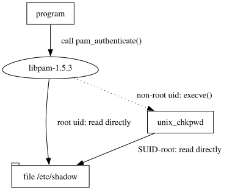
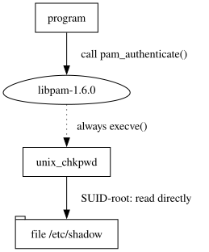

a libpam bug
Over a past few months I updated libpam nixpkgs package a few times.
I broke it at least three times:
- fix clobbered patched
Makefile.in - fix deleted
required pam_lastlogmodule - fix broken empty password handling
It's not great. But at least each bug is slightly different.
Exploring it gives me some insight into how libpam works.
Let's look at the most recent breakage related to empty passwords.
actual password handling bug
In nixpkgs issue#297920
Thomas M. DuBuisson reported that users with empty passwords no longer
work on NixOS.
An example /etc/nixos/configuration.nix snippet to create such an user
is:
{ ... }:
{
users.users.test = {
isNormalUser = true;
password = "";
extraGroups = [ ];
};
}
After an update to libpam-1.6.0 login did not work any more:
login: test
Password:
Login incorrect
Why did it break? Let's look at the way passwords are stored in linux.
/etc/shadow structure
On linux desktops hashed user passwords are usually stored in
/etc/shadow:
# cat /etc/shadow
...
nobody:!:1::::::
nulloktest:$6$D0XkOSlH$fWuW6/7aFD5ZD2YzBuerj0STra3LddBNoXMn5pomYRmdbmsjM6bGzIX7nQQS4bGepDBoao2U.IZRGhgAJ4qOp.:1::::::
man 5 shadow
from shadow package has more detail on what each field means.
As hashed passwords are still sensitive information /etc/shadow is not
readable by most users:
$ ls -l /etc/shadow
-rw-r----- 1 root shadow 3454 Mar 29 07:03 /etc/shadow
Programs that check passwords are usually ran as root or are
SUID-root themselves.
hash structure
$6$D0XkOSlH$fWuW6/7aFD5ZD2YzBuerj0STra3LddBNoXMn5pomYRmdbmsjM6bGzIX7nQQS4bGepDBoao2U.IZRGhgAJ4qOp.
is not just a hash string of a well known hash algorithm. It used to be.
But not any more.
man 5 crypt
from libxcrypt package explains the string format in detail. It's 10
pages long!
The main takeaway from that page is that there are a few ways to encode
empty ("" password) and blank (no password prompt) passwords for a user:
nulloktest:$6$D0XkOSlH$fWuW6/7aFD5ZD2YzBuerj0STra3LddBNoXMn5pomYRmdbmsjM6bGzIX7nQQS4bGepDBoao2U.IZRGhgAJ4qOp.:1::::::
nulloktest::1::::::
Hashed version (first) accepts only empty("") password while empty version (second) does not prompt for a password at all.
This hashed version happens to use SHA512 algorithm ($6$ prefix). You
can have other encodings as well: by varying used hash salt for SHA512
algorithm or by switching the hashing algorithm (for example to
yescrypt.)
libpam overview
PAM stands for "Pluggable Authentication Modules". It allows programs
to embed user authentication without having to deal with the specifics of
accessing /etc/shadow contents directly. libpam allows you to
completely change authentication back end via /etc/pam.d/
configuration to use non-shadow mechanisms instead. I'll focus on
shadow here and will avoid any configuration aspects.
Well known libpam users are sudo and login programs. Those are
expected to be ran as root or gain root via SUID root bit on the
binaries. login can authenticate any user in the system while sudo
probably only needs to authenticate current user.
Fun fact: normally you need root (or shadow) privileges to read
/etc/shadow for password verification purposes.
But libpam can be used for non-root programs as well! The typical
example is the session screen locker like swaylock or i3lock: those
lock your screen until you type current user's password. How do they
manage to validate current user's password without having a SUID
root bit? libpam does it by calling external unix_chkpwd
SUID root program from libpam package:
$ ls -l `which unix_chkpwd`
-r-s--x--x 1 root root 63472 Mar 29 04:41 /run/wrappers/bin/unix_chkpwd
No magic unfortunately :)
back to password handling bug
In libpam issue#758
Chris Severance narrowed the regression down to
the pam_unix/passverify change.
Here are two diagrams to show the effect of that change.
Before the change libpam-1.5.3 password checking diagram looked this way:

After the change libpam-1.6.0 password checking diagram looks this way:

To phrase it in words: libpam-1.5.3 used unix_chkpwd external helper
program only if program was not already ran as root. libpam-1.6.0
in contrast always uses unix_chkpwd.
In theory both versions should work the same.
In practice unix_chkpwd disallows empty passwords (bug) but allows the
blank ones (feature).
Mechanically the bug happens as unix_chkpwd adds
this extra bit of code:
--- a/modules/pam_unix/passverify.c
+++ b/modules/pam_unix/passverify.c
@@ -1096,6 +1096,12 @@ helper_verify_password(const char *name, const char *p, int nullok)
if (pwd == NULL || hash == NULL) {
helper_log_err(LOG_NOTICE, "check pass; user unknown");
retval = PAM_USER_UNKNOWN;
+ } else if (p[0] == '\0' && nullok) {
+ if (hash[0] == '\0') {
+ retval = PAM_SUCCESS;
+ } else {
+ retval = PAM_AUTH_ERR;
+ }
} else {
retval = verify_pwd_hash(p, hash, nullok);
}
Here helper_verify_password() started rejecting empty passwords with
non-empty hashes present in /etc/shadow. Oops. This change is what
distinguishes theses hashes:
nulloktest::1:::::::hash[0] == '\0'(hash of length0): acceptednulloktest:$6$D0...:hash[0] != '\0'(hash of length>0): rejected
Such an early rejection is a bug. The hash needs to have a chance to be verified instead.
helper_verify_password() function is only used by external helpers like
unix_chkpwd and was never used by libpam.so itself. That's why
libpam-1.5.3 just worked for login.
The fix is simple:
--- a/modules/pam_unix/passverify.c
+++ b/modules/pam_unix/passverify.c
@@ -76,9 +76,13 @@ PAMH_ARG_DECL(int verify_pwd_hash,
strip_hpux_aging(hash);
hash_len = strlen(hash);
- if (!hash_len) {
+
+ if (p && p[0] == '\0' && !nullok) {
+ /* The passed password is empty */
+ retval = PAM_AUTH_ERR;
+ } else if (!hash_len) {
/* the stored password is NULL */
- if (nullok) { /* this means we've succeeded */
+ if (p && p[0] == '\0' && nullok) { /* this means we've succeeded */
D(("user has empty password - access granted"));
retval = PAM_SUCCESS;
} else {
@@ -1109,12 +1113,6 @@ helper_verify_password(const char *name, const char *p, int nullok)
if (pwd == NULL || hash == NULL) {
helper_log_err(LOG_NOTICE, "check pass; user unknown");
retval = PAM_USER_UNKNOWN;
- } else if (p[0] == '\0' && nullok) {
- if (hash[0] == '\0') {
- retval = PAM_SUCCESS;
- } else {
- retval = PAM_AUTH_ERR;
- }
} else {
retval = verify_pwd_hash(p, hash, nullok);
}
Here we move all the null password checking to a common verify_pwd_hash
code and check for password length and not for hash length to handle
nullok libpam configuration.
debugging tips
unix_chkpwd is a SUID root binary. Moreover, it changes it's
behavior based on actual user calling it. I wanted to find a way to
probe directly it's ability to validate /etc/shadow contents without
involving external login binary.
On a system with libpam installed password checking session for an
arbitrary user could be done this way:
$ printf "correct-password\0" | sudo unix_chkpwd testuser nullok; echo $?
0
$ printf "incorrect-password\0" | sudo unix_chkpwd testuser nullok; echo $?
7
You need to pass null-terminated password into unix_chkpwd stdin
descriptor. The error code will tell you back if the check succeeded or
why it failed.
I needed an equivalent check for a locally built unix_chkpwd from
linux-pam git repository. I came up with this hack:
# build unix_chkpwd
$ cd linux-pam
$ ./configure --disable-doc
$ make
# mark unix_chkpwd SUID-root
$ sudo chown root modules/pam_unix/unix_chkpwd
$ sudo chmod 4755 modules/pam_unix/unix_chkpwd
# check if it can authenticate the suer
$ printf "\0" | sudo modules/pam_unix/unix_chkpwd nulloktest nullok; echo $?
This setup allowed me to quickly find the problematic bit using
printf() debugging.
hashed empty passwords
Is it typical to have empty hashed passwords? At least passwd does not
allow you to specify an empty password explicitly:
# passwd nulloktest
New password:
Retype new password:
No password has been supplied.
...
passwd: Permission denied
passwd: password unchanged
But we can set a blank password with a -d option:
# passwd -d nulloktest
passwd: password changed.
# grep nulloktest /etc/shadow
nulloktest::1::::::
This subtlety was one of the reasons why upstream linux-pam had a hard
time verifying a problem of empty hashed password. So how does NixOS
manage to create empty hashed passwords in the first place?
It uses perl code to call crypt() function from libxcrypt to
generate one. Actual code:
sub hashPassword {
my ($password) = @_;
my $salt = "";
my @chars = ('.', '/', 0..9, 'A'..'Z', 'a'..'z');
$salt .= $chars[rand 64] for (1..8);
return crypt($password, '$6$' . $salt . '$');
}
Here the $password passed is an empty string. We can generate a few of
them just for fun:
$ perl -e 'my $salt = ""; my @chars = (".", "/", 0..9, "A".."Z", "a".."z"); $salt .= $chars[rand 64] for (1..8); print(crypt("", "\$6\$" . $salt . "\$") . "\n");'
$6$AgpQ6azd$0YmJW0VFg0FwyPgSW1KSiF8cy5qB8NB/.IcMbjMa1OCbGH3ki9a4bkuhtMxQupeMeiagB86tpW7F/7yOl3Hhc0
parting words
libpam updates are tricky. Every time I update libpam I break
something. This time it was a somewhat benign case of empty password
handling. We need more tests. The empty password fix was merged to
libpam as PR#784
and to nixpkgs as PR#298994.
If you are affected by an empty password bug you can set the password to
a blank hash with hashedPassword = "". Or set it to blank with
passwd -d $user. Both are equivalent.
libpam-1.6.0 executes an externalunix_chkpwd binary with SUID
root set to validate passwords.
Blank passwords (empty hash) are subtly different from empty passwords
(present hash of empty string): blank passwords don't get prompted by
login and friends while empty passwords do. Sometimes this causes the
confusion.
NixOS uses direct crypt() call to libxcrypt to generate
/etc/shadow entries.
libxcrypt supports quite a few hashing algorithms and tweaks on top of
them that control hashing rounds and so on.
linux-pam upstream is very responsive! It's always a pleasure to send
fixes there.
Have fun!